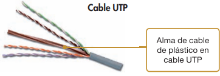
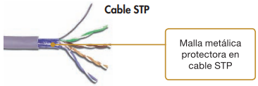

1. Los medios de transmisión
Nos ocuparemos en esta unidad del nivel físico de la red, es decir, de las funciones y especificaciones de la primera capa del modelo de referencia OSI. Sin embargo, la instalación de red no solo implica cables y conectores. La red debe extenderse por la instalación de una vivienda o una oficina, lo que hace que el despliegue del sistema de cableado sea más complejo que la simple confección de los cables por donde viajará la señal de red. El medio de transmisión es el soporte físico que facilita el transporte de la información y supone una parte fundamental en la comunicación de datos. La calidad de la transmisión dependerá de sus características físicas, mecánicas, eléctricas, etc. El transporte, según hemos visto, puede ser mecánico, eléctrico, óptico, electromagnético, etc. El medio debe ser adecuado para la transmisión de la señal física con objeto de producir la conexión y la comunicación entre dos dispositivos.
1.1. Los cables de pares y metálicos
Vamos a incluir en este apartado todos los medios de transmisión que utilizan canales conductores metálicos para la transmisión de la señal, y que están sujetos tanto a la ley de Ohm, como a las leyes fundamentales que rigen el electromagnetismo. Los cables de pares están formados por pares de filamentos metálicos y constituyen el modo más simple y económico de todos los medios de transmisión. Sin embargo, presentan algunos inconvenientes: cuando se sobrepasan ciertas longitudes, hay que acudir al uso de repetidores para restablecer el nivel eléctrico de la señal. Tanto la transmisión como la recepción utilizan un par de conductores que, si no están apantallados, son muy sensibles a interferencias y diafonías producidas por la inducción electromagnética de unos conductores en otros (motivo por el que en ocasiones percibimos conversaciones telefónicas ajenas en nuestro teléfono). Un modo de subsanar estas interferencias consiste en trenzar los pares de modo que las intensidades de transmisión y recepción anulen las perturbaciones electromagnéticas sobre otros conductores próximos. Esta es la razón por la que este tipo de cables se llaman cables de pares trenzados. Existen fundamentalmente dos tipos:
|  | UTP son las siglas de Unshielded Twisted Pair. Es un cable de pares trenzado y sin recubrimiento metálico externo, de modo que es sensible a las interferencias. Es importante guardar la numeración de los pares, ya que de lo contrario el efecto del trenzado no será efi caz disminuyendo sensiblemente o incluso impidiendo la capacidad de transmisión. Es un cable barato, fl exible y sencillo de instalar. |
|  | STP son las siglas de Shielded Twisted Pair. Este cable es semejante al UTP pero se le añade un recubrimiento metálico para evitar las interferencias externas. Este recubrimiento debe ser conectado a la tierra de la instalación. Por tanto, es un cable más protegido, pero menos fl exible que el UTP. El sistema de trenzado es idéntico al del cable UTP. |
Obviamente, el cable STP tiene más ventajas eléctricas que el cable UTP por lo que, en principio, siempre se tendría que elegir STP en vez de UTP, sin embargo, la falta de flexibilidad originada por su rigidez hace que solo se utilice en donde realmente hace falta: en entornos eléctricamente hostiles.
•En los cables de pares hay que distinguir dos clasificaciones:
Primera clasificación: las categorías. Cada categoría especifica unas
características eléctricas para el cable: atenuación, capacidad de la línea
e impedancia. Las categorías 3 a 5, que soportan frecuencias de 10, 20 y 100 MHz
respectivamente, empiezan a estar en desuso, sin embargo, es frecuente encontrarlas
instaladas en instalaciones antiguas. También se utiliza una categoría llamada 5e, que mejora
algo las capacidades de la categoría 5. Las categorías 6 (estándar ANSI/TIA/EIA-568-B.2-1) y
7 (categoría ISO/IEC 11801:2002 categoría 7/clase F) llegan a transmisiones de 250 y 600 MHz
respectivamente. El estandar que define estas categorias es el TIA/EIA-568-B. Actualmente lo mas
frecuentes es instalar categoría 5e o 6.
•Segunda clasificación: las clases. Cada clase especifica las distancias permitidas, el ancho de banda conseguido y las aplicaciones para las que es útil en función de estas características. Están detalladas las clases A a F. En la Tabla 2.2 se especifican ejemplos que relacionan algunas clases con algunas categorías. Para las categorías superiores los parámetros dependerán mucho del entorno de operación.